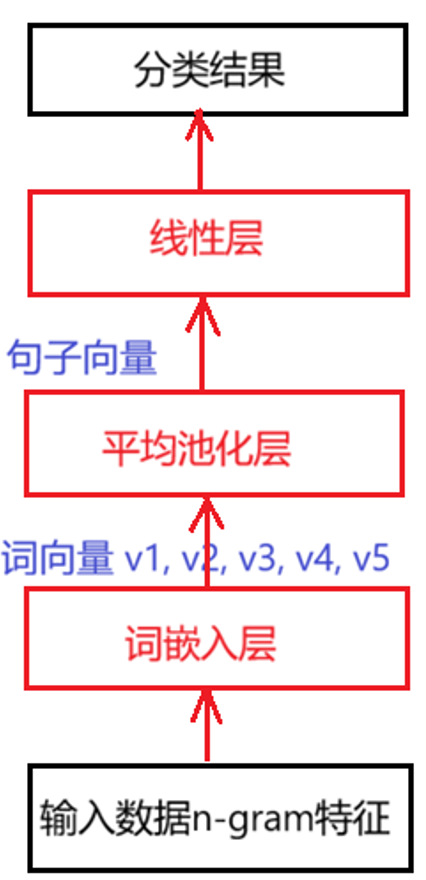
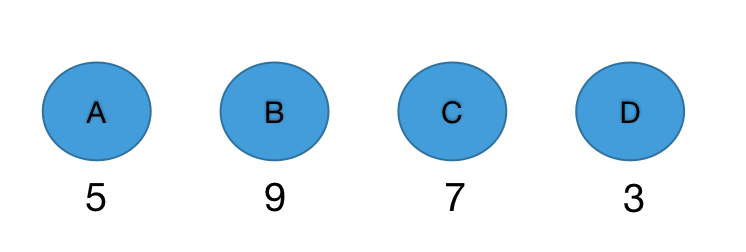
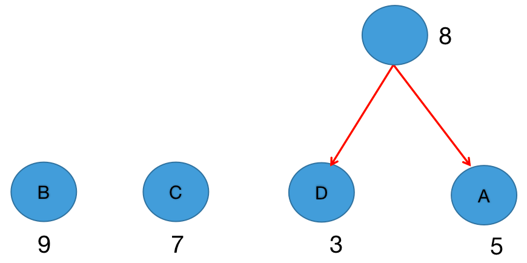
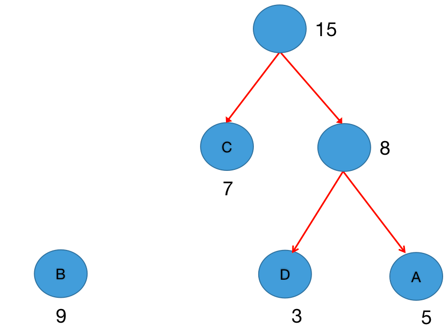
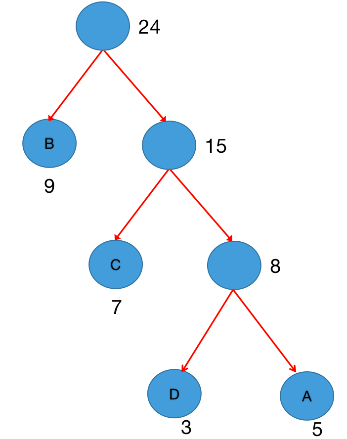
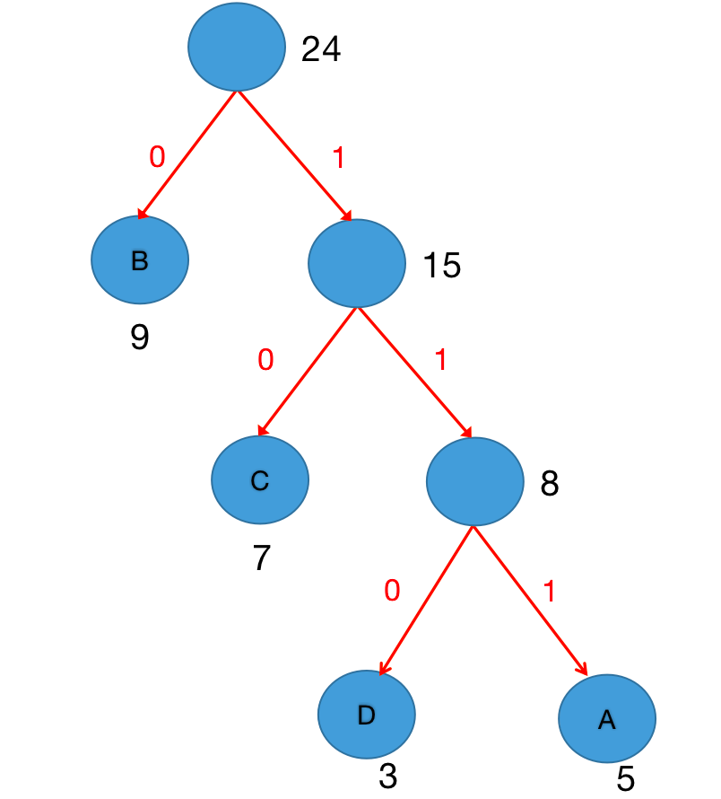
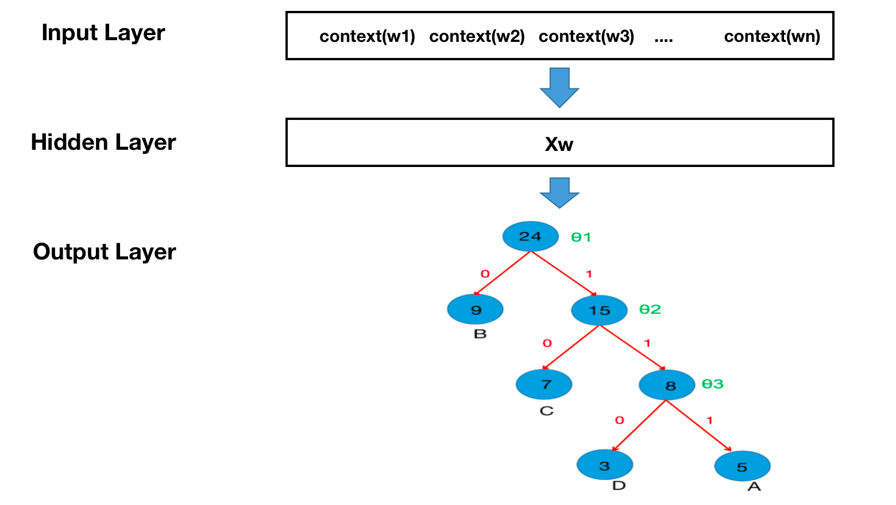

import torch import matplotlib.pyplot as plt # 设置中文字体 plt.rcParams['font.sans-serif'] = ['SimHei'] # 微软雅黑 plt.rcParams['axes.unicode_minus'] = False # 解决负号显示问题 # 设置设备，优先使用顺序：GPU > MPS > CPU DEVICE = torch.device( "cuda" if torch.cuda.is_available() else "mps" if torch.backends.mps.is_available() else "cpu" ) print(f"当前设备：{DEVICE}")
当前设备：cuda
1 fasttext工具介绍
学习目标
- 了解fasttext工具的作用.
- 了解fasttext工具的优势及其原因.
- 掌握fasttext的安装方法.
1.1 FastText 介绍
核心用途
- 有监督学习：文本分类
- 无监督学习：训练词向量
核心优势
- 速度快：模型结构简单，使用层次Softmax或负采样加速计算
- 效果好：引入词级n-gram特征(监督学习)，能捕捉局部关系
- 处理OOV：进行subword(子词)建模(无监督学习)，能处理OOV(未登录词)
安装
pip install fasttext-wheel
验证安装：
import fasttext
2 fasttext 模型架构
2.1 学习目标
- 理解 fasttext 的整体模型结构
- 了解大规模分类的两种高效输出层方案
- 层次化 Softmax
- 负采样
2.2 fasttext 模型架构
fasttext 是什么
fasttext 是一个高效的文本分类模型，采用三层网络结构
- 词嵌入层：词和 n-gram特征 的 embedding
- 平均池化层/隐藏层：embedding 的平均池化
- 线性层：输出预测类别

2.3 为什么需要高效输出层
当类别数 / 词表规模 V 很大时（10⁴～10⁶）：
- 普通 Softmax：
- 计算复杂度：O(V)
- 参数更新：O(V)
- 训练和推理成本极高
解决思路分两条路线：
大规模分类 ├─ 有监督学习(文本分类)：层次化 Softmax，O(log₂V) └─ 无监督学习(训练词向量)：负采样，O(K)，K ≪ V
2.4 层次化 Softmax（精确高效）
核心思想
将 V 类多分类
转化为 哈夫曼树二分类
- V 类多分类 → log₂(V) 次二分类
- 使用哈夫曼树构建类别
- 每个类别是树中的一个叶子节点
哈夫曼树
定义: 带权路径长度最小的二叉树
特点: 权值(频次)越大的节点离根节点越近
构建步骤: 1. 将所有类别看作独立节点，并统计频次 2. 选择权值(频次)最小的两个节点合并为新节点 3. 新节点权值(频次) = 两子节点权值(频次)之和 4. 重复步骤2-3，直到只剩一棵树 5. 哈夫曼编码，左0右1，从根节点到叶节点的路径，即为该节点的哈夫曼编码
示例: 假设有4个类别A~D及其频次

构建过程：



哈夫曼编码

概率计算方式
- 每个内部节点是一个二分类器：
Linear(hidden_dim, 1) + Sigmoid
-
Linear(hidden_dim, 1)数量 = 内部节点数量/非叶子节点数量
-
类别条件概率为路径上概率的乘积：
$$ P(y|x) = \prod_{i \in path(y)} P(d_i | x) $$
计算优势
- 单样本计算量：O(log₂ V)
- 参数更新：仅更新路径上的节点，对应的线性层
Linear(n, 1) - 仍然是精确概率模型
2.5 负采样（近似高效）
核心思想
负采样是一种通过构造正负样本对进行对比学习的数据采样方法。以牺牲分类精度为代价，来提升大规模分类下的训练效率。
将多分类转化为多个独立的二分类
负采样本身不定义模型结构，只定义如何构造训练样本
训练方式：对比学习
- 对每个正样本 (x, y⁺)，采样 K 个负样本 ${y₁⁻, …, y_K⁻}$
- 对每个 (x, y) 进行一次 独立的二分类判断
Linear(n,1)+Sigmoid
训练损失函数为：
$$ \text{Loss} = - \Big[ \log \sigma(x \cdot y^+) + \sum_{k=1}^K \log \sigma(-x \cdot y_k^-) \Big] $$ σ 为 Sigmoid 函数，x·y 表示向量相似度（点积或内积）
特点
- 通常训练采用正负样本对训练的对比学习方法
- 提高计算效率，计算复杂度为 $ O(K),\quad K \ll 类别总数V $
适用场景
- 常用于词向量与表示学习任务
- 类别数量极大、对精确概率要求不高的场景
2.6 总结 - 对比原始 Softmax / 层次化 Softmax / 负采样
假设：
- 隐藏层维度 n = 300
- 类别数 / 词表大小 V = 100,000
| 维度 | 原始 Softmax | 层次化 Softmax | 负采样+对比学习 |
|---|---|---|---|
| 核心思想 | 一次性对所有类别归一化 | 沿树路径做多次二分类 | 用少量负样本近似训练 |
| 是否精确 | ✅ 是 | ✅ 是 | ❌ 否 |
| 输出层结构 | Linear(n, V) + Softmax |
Linear(n,1)+Sigmoid × (log₂V) |
Linear(n,1)+Sigmoid |
| 单样本对应原始样本 | 1个原始样本 | 1个原始样本 | 1个正样本+ K个负样本 = K+1 个原始样本 |
| 单样本计算量 | O(V) | O(log₂ V) | O(K) |
| 参数更新范围 | 所有类别参数 | 仅路径节点参数 | 正样本 + K 个负样本 |
| 输出含义 | 概率分布 | 类别概率 | 相似度分数 |
| 典型用途 | 小规模分类 | 大规模分类，有监督学习的文本分类 | 表示学习,无监督学习的词向量训练 |
3 fasttext文本分类
学习目标
- 了解什么是文本分类及其种类.
- 掌握fasttext工具进行文本分类的过程.
3.1 文本分类介绍
文本分类概念
- 文本分类的是将文本分配给一个或多个类别. 通常属于监督学习范畴.
文本分类种类
| 类型 | 特点 | 示例 |
|---|---|---|
| 二分类 | 两个对立类别 | 好评/差评、垃圾邮件/正常邮件 |
| 单标签多分类 | 多个互斥类别，每条文本仅属一类 | 文本分类为体育/科技/财经 |
| 多标签多分类 | 多个非互斥类别，一条文本可属多类 | 一部电影同时标记：剧情/喜剧/爱情 |
3.2 文本分类的过程
-
- 获取数据
-
- 划分训练集与验证集
-
- 训练模型
-
- 模型评估
-
- 模型调优
-
- 模型保存与加载
获取数据
这是烹饪相关的数据集, 由facebook AI实验室提供
# 4 数据集在虚拟机/root/data/cooking下 # 5 查看数据的前10条 $ head cooking.stackexchange.txt
__label__sauce __label__cheese How much does potato starch affect a cheese sauce recipe? __label__food-safety __label__acidity Dangerous pathogens capable of growing in acidic environments __label__cast-iron __label__stove How do I cover up the white spots on my cast iron stove? __label__restaurant Michelin Three Star Restaurant; but if the chef is not there __label__knife-skills __label__dicing Without knife skills, how can I quickly and accurately dice vegetables? __label__storage-method __label__equipment __label__bread What's the purpose of a bread box? __label__baking __label__food-safety __label__substitutions __label__peanuts how to seperate peanut oil from roasted peanuts at home? __label__chocolate American equivalent for British chocolate terms __label__baking __label__oven __label__convection Fan bake vs bake __label__sauce __label__storage-lifetime __label__acidity __label__mayonnaise Regulation and balancing of readymade packed mayonnaise and other sauces
- 数据说明:
__label__类别1 文本内容
__label__类别2 文本内容
__label__类别1 __label__类别2 文本内容
__label__类别1 __label__类别2 __label__类别3 文本内容
每一行格式为:一个标签列表 + 空格 + 文本内容, 标签列表类似"__label__sauce __label__cheese", 代表有两个标签sauce和cheese
划分训练集与验证集
# 6 查看数据总数 $ wc cooking.stackexchange.txt 15404 169582 1401900 cooking.stackexchange.txt # 7 多少行 多少单词 占用字节数(多大)
# 8 条数据作为训练数据 $ head -n 12404 cooking.stackexchange.txt > cooking.train # 9 条数据作为验证数据 $ tail -n 3000 cooking.stackexchange.txt > cooking.valid
""" 演示 fasttext 文本分类案例，多标签多分类任务，在烹饪数据集上训练 注意事项： 如果遇到 ValueError: Unable to avoid copy while creating an array as requested. If using `np.array(obj, copy=False)` replace it with `np.asarray(obj)` to allow a copy when needed (no behavior change in NumPy 1.x). 解决方案：尝试固定 numpy 版本到 1.26.x pip install --upgrade "numpy<2" # 推荐使用 1.26.4 如需，可重新安装 fasttext-wheel（预编译版本，避免编译器依赖） pip install --force-reinstall fasttext-wheel 超参数: 'model': 只有train_unsurpervised,才选择 cbow,skip-gram(默认) 'epoch': 5, 训练轮数 'lr': 0.1, 学习率 'wordNgrams': 1, ngram特征的N, 1,2,3 'dim': 100, 词向量维度 'loss': "softmax",标注多分类，单标签 "hs", 层次softmax，单标签 "ova", 多标签多分类 "ns", 负采样+对比学习训练，一般用于训练词向量-无监督学习 'minCount': 1, 最小词频，词频小于该值的自动忽略 """ # 导包 import os import fasttext # 1.定义函数，实现fasttext监督学习-手动调参 def train_fasttext( input_path, test_path, lr=0.1, epochs=5, wordNgrams=1, dim=100, loss="softmax", save_model=False ): """ 训练fasttext文本分类模型，使用fasttext.train_supervised :param input_path: 训练集路径 :param test_path: 测试集路径 :param lr: 学习率 :param epochs: 训练轮数 :param wordNgrams: ngrams的N :param dim: 词向量维度 :param loss: 损失函数 :param save_model: 是否保存模型 :return: 返回模型测试结果 """ # 1.进行fasttext文本分类训练，fasttext.train_supervised model = fasttext.train_supervised( input=input_path, lr=lr, epoch=epochs, wordNgrams=wordNgrams, dim=dim, loss=loss, ) # 2.保存模型 if save_model: os.makedirs(r"./model", exist_ok=True) # 保存模型 model.save_model(r"./model/fasttext_model202603.bin") print("模型保存成功") # 加载模型 model = fasttext.load_model(r"./model/fasttext_model202603.bin") print("模型加载成功") # 3.模型预测，查看预测效果 result = model.predict("What is a mild detergent?") print(result) result = model.predict("Why would you pinch egg whites when making sunny side up eggs?") print(result) # 4.模型测试 result = model.test(path=test_path) # (样本数量，准确率，f1分数) print(result) return result # 2.定义函数，实现fasttext监督学习-自动调参 def train_fasttext02( input_path, test_path, ): """ 训练fasttext文本分类模型，使用fasttext.train_supervised :param input_path: 训练集路径 :param test_path: 测试集路径 :return: 返回模型测试结果 """ # 1.进行fasttext文本分类训练，fasttext.train_supervised # 自动HPO: 自动调参，来获取最优参数 model = fasttext.train_supervised( input=input_path, autotuneValidationFile=test_path, # 自动调参的参考的验证集文件路径，由它来判断模型好坏，最终只保存最优模型 autotuneDuration=20, # 自动调参的时长，默认60秒 ) # 3.模型预测，查看预测效果 result = model.predict("What is a mild detergent?") print(result) result = model.predict("Why would you pinch egg whites when making sunny side up eggs?") print(result) # 4.模型测试 result = model.test(path=test_path) # (样本数量，准确率，f1分数) print(result) return result # 测试 if __name__ == '__main__': # 1.基础版训练 print("基础版训练") result = train_fasttext( input_path=r"fasttext_data/cooking_train.txt", test_path=r"fasttext_data/cooking_valid.txt" ) # 2.调整参数，调整epochs,lr print("调整参数，调整epochs,lr") result = train_fasttext( input_path=r"fasttext_data/cooking_train.txt", test_path=r"fasttext_data/cooking_valid.txt", lr=0.25, epochs=20 ) # 3.使用清洗后数据进行训练 print("使用清洗后数据进行训练") result = train_fasttext( input_path=r"fasttext_data/cooking.pre.train", test_path=r"fasttext_data/cooking.pre.valid", lr=0.25, epochs=20 ) # 4.调整词向量维度 print("调整词向量维度") result = train_fasttext( input_path=r"fasttext_data/cooking.pre.train", test_path=r"fasttext_data/cooking.pre.valid", lr=0.25, epochs=20, dim=512 ) # 5.调整wordNgrams print("调整wordNgrams") result = train_fasttext( input_path=r"fasttext_data/cooking.pre.train", test_path=r"fasttext_data/cooking.pre.valid", lr=0.25, epochs=20, dim=512, wordNgrams=2 ) # 6.更换loss=ns print("更换loss=ns") result = train_fasttext( input_path=r"fasttext_data/cooking.pre.train", test_path=r"fasttext_data/cooking.pre.valid", lr=0.25, epochs=20, dim=512, wordNgrams=2, loss="hs" ) # 7.更换loss=ova print("更换loss=ova") result = train_fasttext( input_path=r"fasttext_data/cooking.pre.train", test_path=r"fasttext_data/cooking.pre.valid", lr=0.25, epochs=20, dim=200, wordNgrams=1, loss="ova", save_model=True ) # 8.自动调参 print("自动调参") result = train_fasttext02( input_path=r"fasttext_data/cooking.pre.train", test_path=r"fasttext_data/cooking.pre.valid", )
更换loss=ova
模型保存成功
模型加载成功
(('__label__measurements',), array([0.0008659]))
(('__label__eggs',), array([0.99059743]))
(3000, 0.6066666666666667, 0.2623612512613522)
自动调参
3.3 小结
- 什么是文本分类: 文本分类的是将文本分配给一个或多个类别. 通常属于监督学习范畴.
- 文本分类的种类: 二分类、单标签多分类、多标签多分类
- fasttext文本分类过程:
-
- 获取数据
-
- 划分训练集与验证集
-
- 训练模型
-
- 模型评估
-
- 模型调优
-
- 模型保存与加载
4 fasttext训练词向量
学习目标
- 了解词向量的相关知识.
- 掌握fasttext工具训练词向量的过程.
4.1 word2vec-静态词向量
- 核心思想：先在大规模无标注语料上预训练词向量，再将其作为固定特征输入到下游任务模型中。
- 训练方法：
fasttext.train_unsupervised(), 无监督训练方法。 - 训练模式：CBOW(上下文预测中间词)，Skip-gram(中间词预测上下文)。
4.2 fastText 训练词向量的过程
- 1.获取训练数据
- 2.训练词向量
- 3.模型效果检验
- 4.模型的保存与加载
5 词向量迁移
- 基础的迁移学习方法
5.1 学习目标
- 了解什么是词向量迁移
- 了解 FastText 提供的预训练词向量
- 掌握 FastText 加载和使用预训练词向量的方法
5.2 词向量迁移简介
词向量迁移是: 直接使用在大规模语料上预训练好的词向量，将其作为下游任务的基础语义表示，而不重新从零开始训练。
FastText 提供了多个预训练词向量模型，主要包括：
| 数据源 | 语言覆盖 | 训练方式 | 向量维度 | 链接 |
|---|---|---|---|---|
| CommonCrawl + Wikipedia | 157 种语言 | CBOW | 300 | https://fasttext.cc/docs/en/crawl-vectors.html |
| Wikipedia | 294 种语言 | Skip-gram | 300 | https://fasttext.cc/docs/en/pretrained-vectors.html |
5.3 使用 FastText 进行词向量迁移
操作流程
- 下载预训练词向量文件（
.bin.gz） - 解压得到
.bin文件 - 加载模型并获取词向量
- 使用近邻词验证词向量质量
下载并解压模型
# Linux/macOS 系统 # 使用 wget 下载中文词向量（CommonCrawl + Wikipedia） # !wget https://dl.fbaipublicfiles.com/fasttext/vectors-crawl/cc.zh.300.bin.gz
# windows系统 # !curl -L -o cc.zh.300.bin.gz "https://dl.fbaipublicfiles.com/fasttext/vectors-crawl/cc.zh.300.bin.gz"
# 解压 .gz 文件 # Windows 系统不自带 gunzip 命令， # 请使用 7-Zip / WinRAR 解压 .gz 文件 # !gunzip cc.zh.300.bin.gz
加载模型并获取词向量
import fasttext # 加载预训练词向量模型 model = fasttext.load_model("cc.zh.300.bin") # 查看词表（前若干个词） print(model.words[:20]) print(len(model.words)) # 获取“音乐”的词向量 print(model.get_word_vector("音乐").shape)
['，', '的', '。', '</s>', '、', '是', '一', '在', '：', '了', '（', '）', "'", '和', '不', '有', '我', ',', ')', '(']
2000000
(300,)
使用近邻词进行效果验证
print(model.get_nearest_neighbors("音乐")) print(model.get_nearest_neighbors("美术")) print(model.get_nearest_neighbors("周杰伦"))
[(0.6703276634216309, '乐曲'), (0.6569967269897461, '音乐人'), (0.6565821170806885, '声乐'), (0.6557438373565674, '轻音乐'), (0.6536258459091187, '音乐家'), (0.6502416133880615, '配乐'), (0.6501686573028564, '艺术'), (0.6437276005744934, '音乐会'), (0.639589250087738, '原声'), (0.6368917226791382, '音响')]
[(0.724744975566864, '艺术'), (0.7165924310684204, '绘画'), (0.6741853356361389, '霍廷霄'), (0.6470299363136292, '纯艺'), (0.6335071921348572, '美术家'), (0.6304370164871216, '美院'), (0.624431312084198, '艺术类'), (0.6244068741798401, '陈浩忠'), (0.62302166223526, '美术史'), (0.621710479259491, '环艺系')]
[(0.6995140910148621, '杰伦'), (0.6967097520828247, '周杰倫'), (0.6859776377677917, '周董'), (0.6381043195724487, '陈奕迅'), (0.6367626190185547, '张靓颖'), (0.6313326358795166, '张韶涵'), (0.6271176338195801, '谢霆锋'), (0.6188404560089111, '周华健'), (0.6184280514717102, '林俊杰'), (0.6143589019775391, '王力宏')]
5.4 小结
- FastText 提供了多语言、高质量的预训练词向量模型
- 预训练词向量模型可以直接加载并用于下游任务
6 扩展-fasttext的 n-gram特征 和 subword建模
为什么需要它们？
传统词向量把“一个词”当作最小单位，问题是：
- 新词（OOV）没有向量
- 拼写错误很难处理
- 词形变化（如
play/playing/played）共享信息少
fastText 通过 n-gram 和 subword（子词） 缓解了这些问题。
n-gram 特征（词级）- 用于文本分类
在文本分类里，fastText 常用 wordNgrams 提取词序列特征。
以 I eat apple 为例：
- unigram（1-gram）：
I,eat,apple - bigram（2-gram）：
I eat,eat apple
作用：不仅看单词，还看局部短语，能更好捕捉语义组合（如“not good”）。
subword 建模（字符级）- 用于训练词向量
fastText 不只学习“整词向量”，还学习“字符 n-gram 向量”，再组合成词向量。
例如词 apple（加边界符后可写作 <apple>）：
- 取若干字符片段，如 <ap, app, ppl, ple, le> 等
- 词向量 ≈ 这些子词向量的平均
作用：
- 未登录词也能表示（只要字符片段见过）
- 低频词更稳
- 对拼写变化、词形变化更友好
总结
| 名称 | 介绍 | 应用 | 示例 | API参数 |
|---|---|---|---|---|
| n-gram | 词级 n-gram，提取局部短语特征 | 文本分类 | I eat apple： unigram（1-gram）：I, eat, apple， bigram（2-gram）：I eat, eat apple |
wordNgrams |
| subword | 字符级 n-gram，提取词内部结构，能处理OOV | 训练词向量 | <apple>： 取若干字符片段，如 <ap, app, ppl, ple, le> 等，词向量 ≈ 这些子词向量的和/平均 |
minn, maxn |
7 扩展-层次softmax 的哈夫曼树梯度计算
类别D的哈夫曼编码为110, 如何定义条件概率$P(D|X)$?

梯度计算过程：
-
- D的哈夫曼编码为110, 对应3次二分类, 通常0设为负类, 1设为正类.
-
- 使用sigmoid进行二分类: 正类概率是: $\sigma(X^T\theta) = 1/(1+e^{-X^T\theta})$, 负类概率是: $1-\sigma(X^T\theta)$, 其中$\theta$ 就是图中非叶子节点对应的参数.
-
- D的概率是: $P(D|X) = P(1|X, \theta_1)P(1|X, \theta_2)P(0|X, \theta_3)$:
-
$P(1|X, \theta_1) = \sigma(X^T\theta_1)$, 24->15
- $P(1|X, \theta_2) = \sigma(X^T\theta_2)$, 15->8
- $P(0|X, \theta_3) = 1-\sigma(X^T\theta_3)$, 8->D
-
- $P(D|X) = \sigma(X^T\theta_1)\sigma(X^T\theta_2)(1-\sigma(X^T\theta_3))$
-
- 对数似然损失:
-
$L(\theta) = -log(P(D|X)) = -log(\sigma(X^T\theta_1)\sigma(X^T\theta_2)(1-\sigma(X^T\theta_3)))$
-
$L(\theta) = -log(\sigma(X^T\theta_1))-log(\sigma(X^T\theta_2))-log(1-\sigma(X^T\theta_3))$
-
- 梯度计算: $$\frac{\partial L}{\partial \theta_i} = (\sigma(X^T\theta_i) - d_i) \cdot X$$ 其中 $d_1, d_2, ...$ 为路径编码 (0或1)
实践含义：仅对路径上的节点计算和更新梯度，大幅降低计算成本。
8 常见面试题
FastText 为什么能更好处理 OOV？
- 使用 字符 n-gram 子词 表示，未登录词也可由子词组合得到向量。
FastText 与 Word2vec 的核心区别是什么？
- FastText 引入子词 n-gram，Word2vec 只使用词级向量。
- FastText 可以处理OOV，Word2vec 无法处理。
FastText 的 CBOW 与 Skip-gram 适用场景？
| 维度 | FastText CBOW | FastText Skip-gram |
|---|---|---|
| 基本思路 | 上下文预测中心词 | 中心词预测上下文 |
| 适用场景 | 中小规模数据、对训练速度要求高 | 大规模语料、对效果要求高 |
| 低频词表现 | 一般 | 很好 |
| 词向量质量 | 较粗 | 更精细 |
| 特点 | 训练快、效率高、资源消耗低 | 表达能力强、泛化能力好 |
| --- |
FastText 做文本分类的主要步骤有哪些？
- 文本清洗 → n-gram 特征 → 训练监督模型 → 评估/推理。
FastText 的训练速度快的原因是什么？
- 模型浅、使用层级 softmax/负采样，计算开销低。
8.1 代码作业
-
- FastText 文本分类训练：自己构造一份小型训练数据（至少 20 条，涵盖 2 个类别，格式为
__label__类别 文本内容），保存到本地文件，使用fasttext.train_supervised()训练分类模型，并用model.test()打印验证集的准确率（Precision）和召回率（Recall）。
- FastText 文本分类训练：自己构造一份小型训练数据（至少 20 条，涵盖 2 个类别，格式为
-
- 词向量相似度计算：加载预训练中文词向量
./cc.zh.300.bin，获取"自然语言处理"、"机器学习"、"深度学习"三个词的词向量，用 余弦相似度 公式计算三两之间的相似度，打印结果并分析哪两个词语义最接近。
- 词向量相似度计算：加载预训练中文词向量
import os import numpy as np # ============================== # 作业1：FastText 文本分类训练 # ============================== def homework1_fasttext_classification(): """ 使用 fasttext 进行文本分类 自行构造训练数据，体验 FastText 分类流程 """ import fasttext # 运行前请确保已安装: pip install fasttext-wheel # 1. 构造训练数据（20条示例，2个类别） train_data = [ # 科技类 "__label__科技 人工智能正在改变我们的生活方式", "__label__科技 深度学习在图像识别领域取得突破性进展", "__label__科技 5G技术加速物联网的发展", "__label__科技 自动驾驶汽车依靠传感器和算法实现导航", "__label__科技 量子计算机的算力远超传统计算机", "__label__科技 芯片技术是现代电子产品的核心", "__label__科技 云计算为企业提供弹性的计算资源", "__label__科技 大数据分析帮助企业做出更好的决策", "__label__科技 区块链技术保证数据的安全和透明", "__label__科技 机器学习模型需要大量数据进行训练", # 体育类 "__label__体育 中国女排赢得了世界冠军", "__label__体育 足球运动员在训练中刻苦练习", "__label__体育 篮球比赛吸引了数万名观众", "__label__体育 游泳运动员打破了世界纪录", "__label__体育 马拉松比赛考验运动员的耐力", "__label__体育 乒乓球是中国的国球", "__label__体育 羽毛球双打需要团队配合", "__label__体育 田径运动是奥运会的核心项目", "__label__体育 体操运动员展现了惊人的柔韧性", "__label__体育 网球大满贯吸引顶级球员参赛", ] # 2. 写入文件 train_file = "fasttext_train.txt" test_file = "fasttext_test.txt" # 用前16条训练，后4条测试 with open(train_file, "w", encoding="utf-8") as f: f.write("\n".join(train_data[:16])) with open(test_file, "w", encoding="utf-8") as f: f.write("\n".join(train_data[16:])) # 3. 训练分类模型 model = fasttext.train_supervised( input=train_file, epoch=20, lr=0.5, wordNgrams=2, verbose=0 ) # 4. 评估 n, precision, recall = model.test(test_file) print("FastText 文本分类结果:") print(f" 测试样本数: {n}") print(f" Precision@1: {precision:.4f}") print(f" Recall@1: {recall:.4f}") # 5. 预测示例 test_sentences = ["神经网络模型在自然语言处理中广泛应用", "运动员在赛场上奋力拼搏"] print("\n预测示例:") for sent in test_sentences: label, prob = model.predict(sent) print(f" 文本: {sent}") print(f" 预测类别: {label[0]} 置信度: {prob[0]:.4f}") # 清理临时文件 os.remove(train_file) os.remove(test_file) # ============================== # 作业2：词向量余弦相似度 # ============================== def cosine_similarity(vec1, vec2): """计算两个向量的余弦相似度""" dot = np.dot(vec1, vec2) norm1 = np.linalg.norm(vec1) norm2 = np.linalg.norm(vec2) if norm1 == 0 or norm2 == 0: return 0.0 return dot / (norm1 * norm2) def homework2_word_similarity(): """ 加载 cc.zh.300.bin，计算三个词的两两余弦相似度 注意：加载大模型文件需要一定时间，请耐心等待 """ import fasttext print("正在加载预训练词向量 cc.zh.300.bin（请稍候...）") # 按需运行：模型文件较大，加载约需数十秒 model = fasttext.load_model("./cc.zh.300.bin") print("加载完成！\n") words = ["自然语言处理", "机器学习", "深度学习"] vectors = {w: model.get_word_vector(w) for w in words} print("词向量余弦相似度计算:") print("-" * 50) pairs = [(words[i], words[j]) for i in range(len(words)) for j in range(i+1, len(words))] scores = [] for w1, w2 in pairs: sim = cosine_similarity(vectors[w1], vectors[w2]) scores.append((w1, w2, sim)) print(f" sim('{w1}', '{w2}') = {sim:.4f}") best_pair = max(scores, key=lambda x: x[2]) print(f"\n结论：'{best_pair[0]}' 与 '{best_pair[1]}' 语义最接近（相似度={best_pair[2]:.4f}）") if __name__ == "__main__": print("=" * 60) print("作业1：FastText 文本分类") print("=" * 60) homework1_fasttext_classification() print("\n" + "=" * 60) print("作业2：词向量相似度（需要 cc.zh.300.bin，按需运行）") print("=" * 60) # homework2_word_similarity() # 取消注释以运行（需要大文件） print("请取消上方注释以运行作业2（需要 cc.zh.300.bin 模型文件）")
============================================================
作业1：FastText 文本分类
============================================================
FastText 文本分类结果:
测试样本数: 3
Precision@1: 0.0000
Recall@1: 0.0000
预测示例:
文本: 神经网络模型在自然语言处理中广泛应用
预测类别: __label__科技 置信度: 0.9050
文本: 运动员在赛场上奋力拼搏
预测类别: __label__科技 置信度: 0.9036
============================================================
作业2：词向量相似度（需要 cc.zh.300.bin，按需运行）
============================================================
请取消上方注释以运行作业2（需要 cc.zh.300.bin 模型文件）